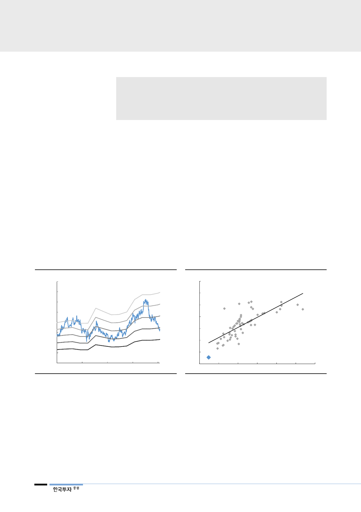

한국전력(015760)
리포트 작성 목적
• 한국전력 저평가 이유와 투자 아이디어 제시
• 원전 이용률 회복 가능성 점검과 향후 전력시장에 끼칠 영향 분석
• 한국전력 실적 전망과 원전 이용률 시나리오 분석을 통한 민감도 체크
I. 투자 아이디어 및 valuation
역사적 valuation 저점
한국전력(한전) 주가가 역사적 valuation 저점을 지나고 있다. 올해 기준 PBR
0.29배로 한전이 5개년 연속 적자를 냈던 2008~2012년 보다 낮은 수준이다
[그림 1]. 글로벌 주요 업체들 중에서도 한전의 PBR은 유독 낮다[그림 2]. 최근
주식시장의 변동성이 커지며 경기방어적 성격을 지닌 글로벌 유틸리티 업종 지수
는 상승했으나, 한전은 이러한 추세에서도 소외됐다. 물론 유틸리티 업종 특성상
각 나라의 에너지 정책, 경제 상황에 따라 차이가 있는 것은 당연하다. 그러나 역
사적 저점에 도달한 만큼, 현 상황 점검과 주가 하락이 과도한 것이 아닌가에 대
한 고민이 필요하다.
[그림 1] 한국전력 PBR band – 다시 밴드 최하단
(원)
80,000
70,000
60,000
50,000
40,000
30,000
20,000
10,000
0
Dec-04
Mar-08
자료: 한국전력, 한국투자증권
Jun-11
Sep-14
0.6x
0.5x
0.4x
0.3x
0.2x
Dec-17
[그림 2] 50개 주요 글로벌 유틸리티 업체 PBR-ROE
- 낮은 ROE 감안해도 PBR 과도하게 낮아
2018F PBR (x)
3.5
3.0
2.5
2.0
1.5
1.0
0.5
한국전력
0.0
0
5
10
15
주: 2018년 해외기업은 블룸버그 컨센서스 기준
자료: 블룸버그, 한국투자증권
2018F ROE (%)
20
25
30
계속되는 실적 하향 요인
특히 원전 이용률 급락
한전 주가가 저평가된 것은, 작년 초부터 실적 하향조정 요인이 지속 발생했으며,
탈원전/석탄 등 정책 불안으로 시장의 신뢰를 잃었기 때문이다. 특히 지진 발생,
원전에 대한 안전강화로 예상치 못하게 원전 이용률이 급락한 영향이 크다. 또한
그 회복 시점을 전혀 가늠할 수 없어, 실적 가시성이 악화됐다.
2